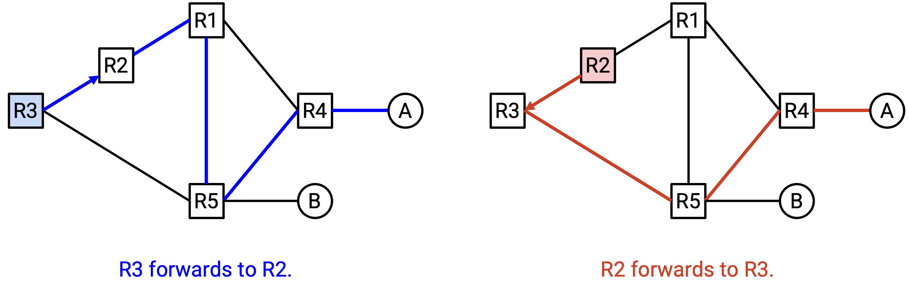
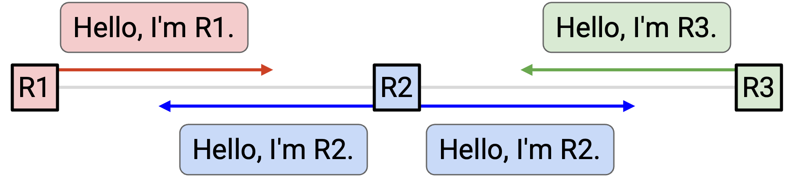
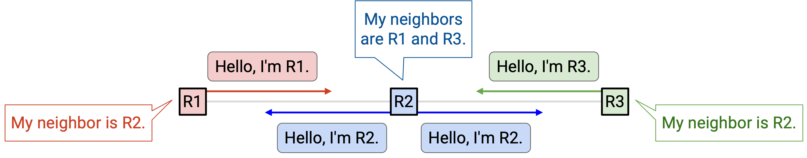
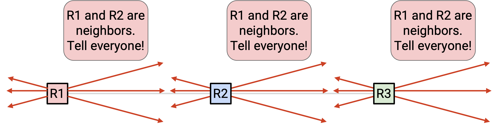
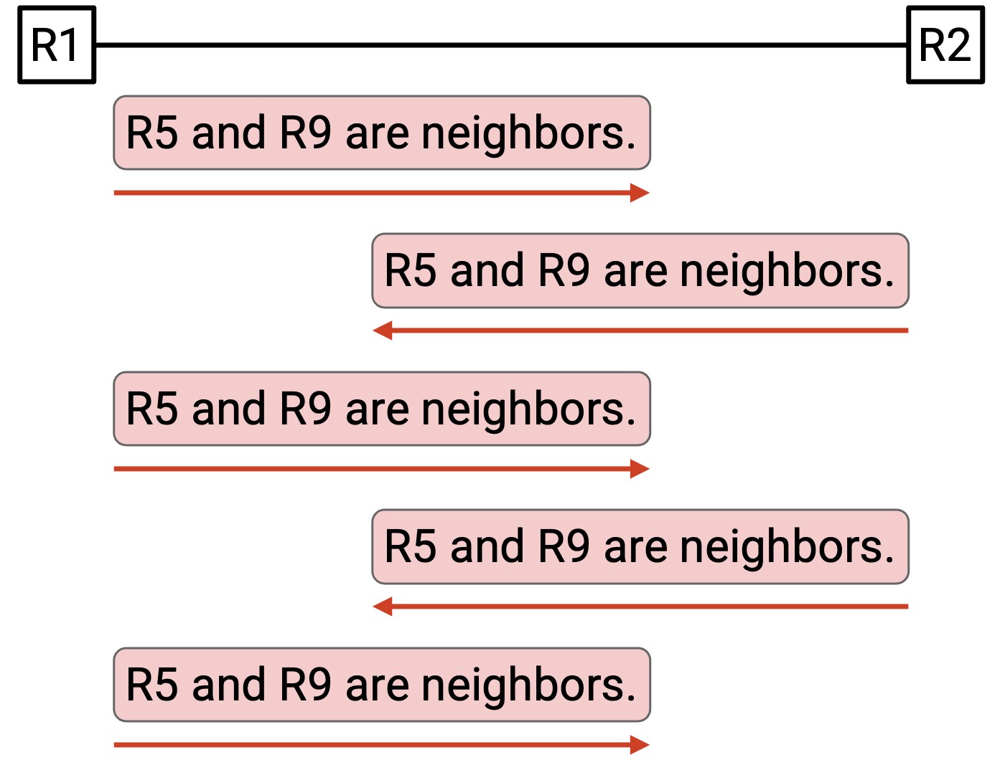
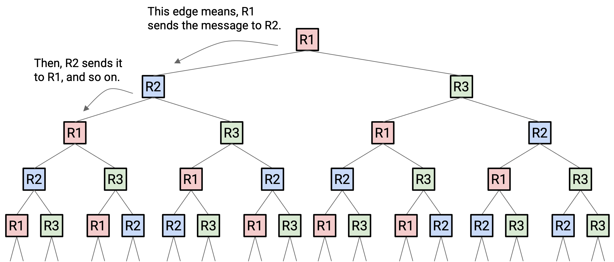
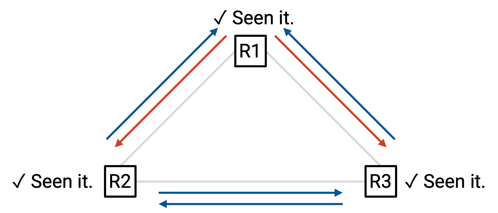
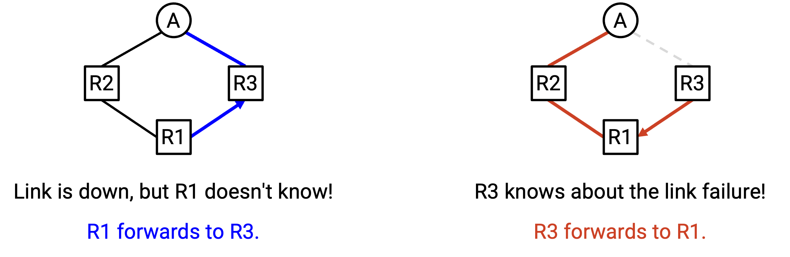

Link-State Protocols
Introduction to Link-State Protocols
Recall that there are different classes of routing protocols, depending on their underlying algorithm. In the previous section, we saw the distance-vector class of protocols. In this section, we’ll discuss link-state, another major class of protocols.
Recall that protocols can also be classified as exterior gateway protocols (operating between networks) and interior gateway protocols (operating within networks). Like distance-vector, link-state protocols are usually interior gateway protocols.
IS-IS (Intermediate System to Intermediate System) and OSPF (Open Shortest Path First) are two major examples of link-state protocols. Both are widely deployed today.
Link-State Overview
Distance-vector performed a distributed, cooperative computation. Each node computes its own piece of the solution, based on results computed by its neighbors. The computation across all nodes collectively forms the full solution. Each node only needs local information from its neighbors in the computation (nodes don’t know the full network graph).
By contrast, link-state protocols perform a local computation. Each node computes the full solution independently and from scratch, without using any computation results from neighbors. However, to do this, each node needs global information from all parts of the network.
Link-state protocols in one sentence: Every router learns the full network graph, and then runs shortest-paths on the graph to populate the forwarding table.
There are two major steps that we have to implement. First, the router needs to somehow learn the full network graph, including the state of every link (up or down), the cost of every link, and the location of every destination.
Then, the router needs to run some algorithm on that graph to learn how to forward packets to every destination.
We’ll think about the second step first (shortest paths), then think about the first step (learning the graph).
Computing Paths
Once the router has a global view of the network, it can easily compute paths through the network using some shortest-path algorithm.
In particular, the router should compute the shortest path to every destination. Then, for each destination, the router records the next hop along the shortest path, just like in distance-vector protocols. The rest of the path is not needed during forwarding.
Many single-source shortest-path algorithms can be used in this step. For example, the Bellman-Ford algorithm (serial version, with none of the distance-vector changes) and Dijkstra’s algorithm both efficiently compute the shortest path from a single source to all destinations. We could also consider alternate solutions like breadth-first search, or algorithms that can run in parallel.
One thing we have to be careful about is inconsistencies between routers.

Remember, every router is computing the shortest paths independently, and deciding on a next hop accordingly. Each router only controls its own next hop, and cannot influence what the next hop will do.
For example, suppose R3 computes this shortest path to A, and decides to forward packets to R2. Then, R2 computes this shortest path to A, and decides to forward packets to R3. Both routers computed valid shortest paths, but their decisions resulted in a routing loop.
To avoid this problem, we have to make sure that all routers are producing forwarding decisions that are compatible with each other. What are the requirements for all routers to produce compatible decisions?
-
All routers have to agree on the network topology. Suppose a link failed, but only one router knows about it. Then different routers are computing paths on totally different graphs, and might produce inconsistent results.
-
All routers are finding least-cost paths through the path. If one router preferred more expensive paths for some reason, we would get inconsistent results.
-
All costs are positive. Negative costs could produce negative-weight cycles.
-
All routers use the same tiebreaking rules. If we assumed shortest paths are unique, then the previous two conditions are sufficient to ensure everybody picks the same path. This condition additionally ensures that if there are multiple paths tied as the shortest, everyone chooses the same one.
With these four conditions, routers could use different shortest-path algorithms, and they would still all compute the same paths and produce compatible decisions. In practice, though, routers usually all use the same algorithm for simplicity.
Learning About Graph Topology
How do routers learn about the full network graph? First, we need to learn who our neighbors are (both routers and destinations). Then, we need to distribute that information through the whole network. We also need routers to glue together all the information it receives into a graph topology.
To discover neighbors, every router sends a hello message to all of its neighbors.

For example, in this network, R2 sends to both of its neighbors: “Hello, I’m R2.” Now, R1 knows that it’s connected to R2, and R3 also knows that it’s connected to R2. Similarly, R1 says hello to R2, so now R2 knows about R1. Likewise, R3 says hello to R2, so R2 also knows about R3.
As a result, everybody now knows who their immediate neighbors are. Note that R1 does not know about R3, because R1 and R3 are not neighbors.

We also want to know if links go down. To support this, we’ll periodically re-send the hello message. If a neighbor stops saying hello (e.g. misses some number of hellos), we assume they disappeared.
Now that we know about our neighbors, we should announce that fact to everybody. To make a global announcement, we send the announcement to all of our neighbors. Also, if we ever receive an announcement, we should send it to all of our neighbors as well. This ensures that every message gets propagated throughout the network. This is known as flooding information across the network. If any information changes (e.g. a neighbor disappears), we should flood that information as well.

We also need to make sure that messages don’t get dropped. Otherwise, other routers might miss an update and compute paths on the wrong graph. To fix this problem, we use the same trick as we used in distance-vector, and periodically re-send the message. As long as the link is functioning, our message should get sent after enough tries.
Avoiding Infinite Flooding
We have to be careful about how we flood announcements through the network.

R2 learns some information and announces it to its neighbor R3. When R3 receives this information, it makes an announcement to its neighbor R2. When R2 receives this information, it makes an announcement to its neighbor R3. These two routers are stuck making announcements to each other, wasting bandwidth, even though there’s no new information.
Note that this is not the same as periodically re-sending messages for reliability. For reliability, we might re-send a message once every 5 seconds. In this infinite loop, the routers are receiving and re-sending duplicate announcements at maximum rate (e.g. millions of times per second).
The problem is even worse if our network contains a loop:
Time step 1: R1 broadcasts to R2 and R3.
Time step 2: R2 broadcasts to R1 and R3. R3 broadcasts to R1 and R2.
Time step 3: R1, R1, R2, and R3 all make broadcasts to (R2, R3), (R2, R3), (R1, R3), and (R1, R2) respectively. Note that R1 received two messages at time step 2, so it makes two broadcasts.
Time step 4: R1, R1, R2, R2, R2, R3, R3, R3 all make broadcasts to (R2, R3), (R2, R3), (R1, R3), (R1, R3), (R1, R3), (R1, R2), (R1, R2), (R1, R2), respectively.
Time step 5: R1 makes 6 broadcasts, R2 makes 5 broadcasts, R3 makes 5 broadcasts.

All the new information was learned at time step 1. But, everybody keeps re-sending the same information, and duplicate announcements multiply exponentially and eventually overwhelm the network.
To fix this problem, we need to make sure that routers don’t send the same information twice.
When we see a message for the first time, send that message to all neighbors, and write down that we’ve seen that message. (We have to write down this message anyway, since we’re trying to use this information to build up the network graph.) Then, if we ever see that same message again, don’t send it a second time.
To uniquely identify a message, we can introduce a timestamp (or some other counter that’s unique to every message).
Now, if we go back to the example from earlier:

Time step 1: R1 broadcasts to R2 and R3.
Time step 2: R2 broadcasts to R1 and R3. R3 broadcasts to R1 and R2.
Time step 3: At this point, R1, R2, and R3 have all seen the message before, so they don’t send it again. No further duplicate messages are sent.
Note that duplicate messages are still sometimes sent with this modification, but we’ve avoided duplicate messages being sent infinitely.
Convergence
Link-state converges on a valid least-cost routing state after every router learns the full network topology and computes its forwarding table accordingly. Convergence relies on every node using the same graph. After convergence, the routing state remains valid as long as the network topology doesn’t change.
As soon as the network topology changes, it can take some time for the network to converge again. We have to wait for the change to be detected (e.g. a link failure). Then, we have to wait for the new information to be propagated through the network, and for routers to re-compute forwarding table entries. While the network is converging, we might be in an invalid routing state, because some routers are using the old graph, while others are using the updated graph. The routing state could have dead-ends, loops, or paths that are not least-cost.

For example, suppose the R3-A link has failed. R3 knows about this, but the other routers do not. R3 will forward packets to R1. However, R1 will still forward packets to R3.
Much of the complexity in link-state protocols is in the small details. To ensure faster convergence and avoid invalid routing as much as possible, we can make minor optimizations and adjustments in the protocol.
Link-State vs. Distance-Vector
What are some pros and cons of link-state protocols compared to distance-vector protocols?
In distance-vector, when we receive an announcement, we don’t necessarily know all the details about the path we’re accepting. We have to trust whatever our neighbor claims in the announcement. By contrast, in link-state, we know the full topology of the graph, so we know more about the paths that packets are taking.
Depending on implementation, distance-vector could be slower to converge. If the network changes, we have to wait for our neighbor to recompute and readvertise a path, before we can update our forwarding table. Then, all of our neighbors have to wait for us, and so on. By contrast, in link-state, everybody can quickly flood the new information and recompute at the same time.
Link-state protocols are good for small local networks, but don’t scale well to the global Internet. In particular, link-state requires every router to know about the entire network. On the global Internet, operators might not want to reveal their network topology (e.g. where their routers are located, the bandwidth of their links) to competitors.
In practice, most networks deploy a combination of distance-vector and link-state protocols.